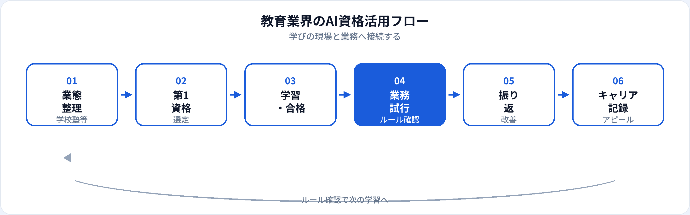

教育現場では、生成AIが授業効率化と不正利用（カンニング・代筆）の両方を引き起こし、学校・塾・大学が利用ルールを整備する動きが加速しています。教育者にとってAI資格は、ツールを禁止するだけでなく、安全な活用と学術的誠実性を説明するための共通言語になります。本記事では、学校・塾・EdTechで働く方が取るべきAI資格を業態別・職種別に整理し、2026年6月時点で活かし方とキャリアまで解説します。学生・新入社員向けは別記事、医療・ヘルスケア向けは別記事、3資格比較は初心者向け比較も参照してください。
教育業界にAI資格が効く理由
教育の本質は学びの設計と評価の公正性です。AI資格は、教育者自身がリテラシーを持ち、生徒・保護者・同僚にルールを説明できる状態をつくる助けになります。
学術的誠実性の議論
カンニング・代筆・引用ルール。生成AIパスポートの著作権・情報管理章が校内ガイドラインのたたき台になる。
授業・教材づくりの効率化
授業案・ワークシート・説明文案の構成案を速く作り、生徒との対話・評価に時間を割ける。
EdTech・DX推進への参画
LMS連携・適応学習・学習分析の導入検討で、非エンジニアがリスク説明役として関与しやすくなる。
試験対策はこちら
業態別：小中高大・塾・EdTech
| 業態 | AI資格の主な役割 | 試行しやすい業務（例） | 第1候補 |
|---|---|---|---|
| 小中学校 | 授業案・保護者向け説明文案 | 単元案の構成、通知文のたたき台 | 生成AIパスポート |
| 高校 | 進路・評価ルールの整理、教材案 | 探究学習の進め方案、説明資料骨子 | 生成AIパスポート |
| 大学 | シラバス・研究倫理・事務文案 | 授業概要案、研究メモ整理（公開情報ベース） | 生成AIパスポート → G検定（研究・EdTech） |
| 塾・予備校 | 解説文案・カリキュラム案 | 類題説明の構成案、FAQ更新（答案は入力しない） | 生成AIパスポート |
| EdTech・企業研修 | プロダクト説明、利用規約整理 | 機能比較リスト、リリースノート文案 | 生成AIパスポート → G検定 |
職種別の第1候補
| 職種・役割 | 第1候補 | 第二候補（任意） |
|---|---|---|
| 教員（小中高） | 生成AIパスポート | —（校内ルール理解が中心） |
| 大学教員・研究者 | 生成AIパスポート | G検定（研究・EdTech関与時） |
| 塾講師・インストラクター | 生成AIパスポート | — |
| 企業研修・人事研修担当 | 生成AIパスポート | 人事向け記事 |
| 学校事務・教务 | 生成AIパスポート | ITパスポート |
| ICT支援員・DX推進 | 生成AIパスポート → ITパスポート | G検定 |
| 教材開発・インストラクショナルデザイン | 生成AIパスポート | G検定 · DS検定 |
| EdTech PM・エンジニア | 生成AIパスポート → G検定 | AI PM記事 |
| 校長・学園長・管理職 | 生成AIパスポート | 管理職向け記事 |
おすすめ資格の比較
| 資格 | 教育業界との相性 | 学習時間目安 | 向いている担当 |
|---|---|---|---|
| 生成AIパスポート | ◎ 授業・教材・ルール整備に直結 | 20〜40時間 | 教員・講師・事務・管理職全般 |
| G検定 | ○ EdTech・学習分析・研究 | 80〜150時間 | EdTech、大学研究、ICT推進 |
| DS検定（リテラシー） | ○ 学習データ・分析の読み方 | 40〜80時間 | 学習分析、教育評価担当 |
| ITパスポート | ○ LMS・校務システム基礎 | 40〜80時間 | ICT支援、校務DX推進 |
第1候補と学習順
-
第1：生成AIパスポート（基本）
教育現場の第一候補。個人情報・著作権・ガバナンスを学び、授業案・教材の安全な使い方に接続。
-
第2（EdTech・研究）：G検定
適応学習・学習分析・EdTechプロダクト開発。教育ドメインと組み合わせてキャリアの差別化に。
-
第2（校務DX）：ITパスポート
LMS・校務支援システム・セキュリティ基礎。ICT支援員・事務DX担当向け。
教育業界の活用フロー

教育では学習→業務試行→ルール確認→振り返りのサイクルが必須です。校長・教頭・保護者・学術委員会との合意形成が、他業界より重要になります。
業務別：安全な活用シーン
| 業務 | 生成AIの使い方（例） | 入力してはいけない例 |
|---|---|---|
| 授業案・単元設計 | 学習目標・活動案の構成、時間配分案 | 生徒名・成績・個別支援情報 |
| 教材・ワークシート | 問題文のたたき台（教員が検証・修正） | 受験校内部資料・未公開問題 |
| 保護者・生徒向け文書 | 通知文・説明会案内の文案 | 個別の指導記録・家庭の詳細 |
| 事務・校務 | 議事録構成案、マニュアル更新案 | 生徒・教職員の個人情報 |
| 探究・研究支援 | 文献整理の補助（公開情報ベース） | 未発表の研究データ・答案 |
採点・評定・進路判断はAIに委ねません。生徒の答案をAIに入力して採点させる運用も、多くの校規で禁止されています。
合格後の実践
1か月目
校内・塾内のAI利用ルールを確認。資格で学んだ著作権・個人情報と照合。管理職・ICT担当に相談。
2か月目
低リスク業務1つ（授業案、保護者向け文案等）で試行。必ず教員が最終確認。
3か月目以降
成果を記録（作成時間短縮、教材品質改善等）。生徒・保護者向けガイドライン整備に反映。
教育現場の注意点
| やってよいこと | 避けるべきこと |
|---|---|
| 校規・塾規に沿った承認済みツールの利用 | 個人の無料AIに生徒情報・答案を入力 |
| 教材案・文案のたたき台生成（教員が検証） | AI出力をそのまま生徒に配布・評価に使用 |
| 学術的誠実性のルールを明示・周知 | 生徒のAI利用を黙認しルールなし |
| 保護者・管理職との事前合意 | 「資格があるから」校則・著作権を無視 |
キャリア・転職でのアピール
校内評価・採用
例：「生成AIパスポート（2026年○月）取得。校内AI利用ガイドライン策定に参画し、授業案作成時間を25%短縮。」
教育では資格＋ルール整備＋授業改善実績のセットが説得力を生みます。記載例は履歴書ガイドを参照。
EdTech・教育系企業への転職
教育ドメイン＋G検定＋プロダクト実績の組み合わせは強み。AI PM、プロンプトエンジニアの記事も併読。
他業界から教育へ
AIリテラシーは補完になります。教育の専門性は教員免許・講師経験・OJTで別途積み上げる必要があります。
資格だけでは足りない点
教育の評価は学びの質・評価の公正性・生徒との信頼です。資格はリテラシーと学習意欲の証明になりますが、教育学・生徒理解・現場の調整力は現場で培う領域です。合格後は、管理職・同僚と連携しながら小さく試すことを優先してください。
よくある質問
教育業界におすすめのAI資格はどれ？
多くの現場では生成AIパスポートが第一候補。EdTech・学習分析担当はG検定やDS検定も検討。
教員・講師でも取る価値はある？
あります。AI活用ルールを説明する土台になる。採点・評価の最終責任は教育者が担う。
生徒の答案・個人情報をAIに入力してよい？
原則入力しない。氏名・成績・答案は個人情報。匿名化した教材案生成に限定。
G検定は教育業界で必要？
必須ではない。教員・講師なら生成AIパスポートで十分なことが多い。EdTech・学習分析担当はG検定の価値が上がる。